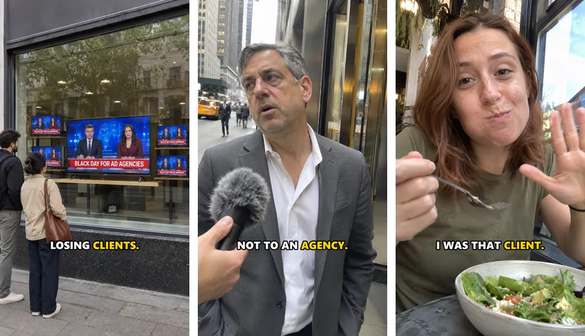
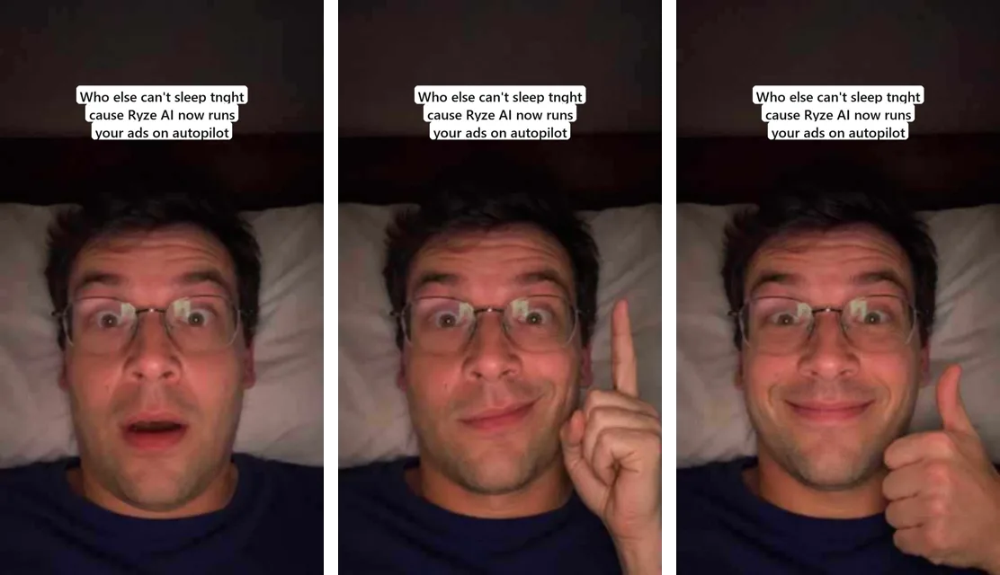
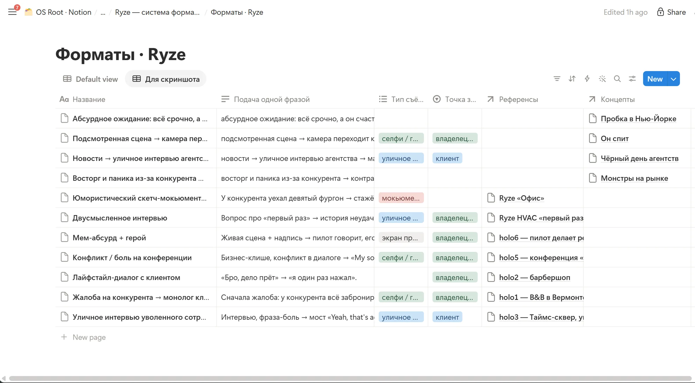
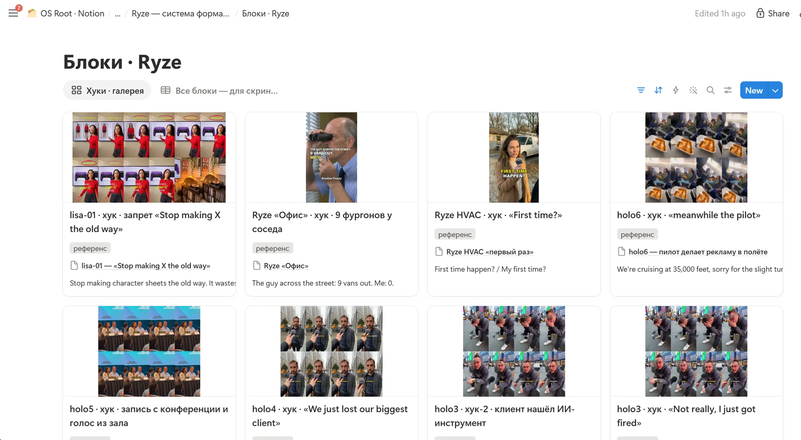
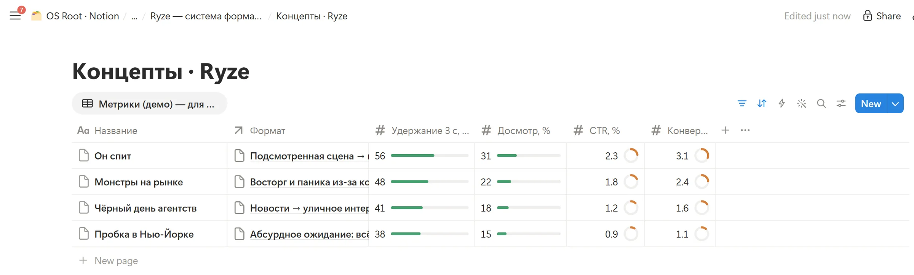
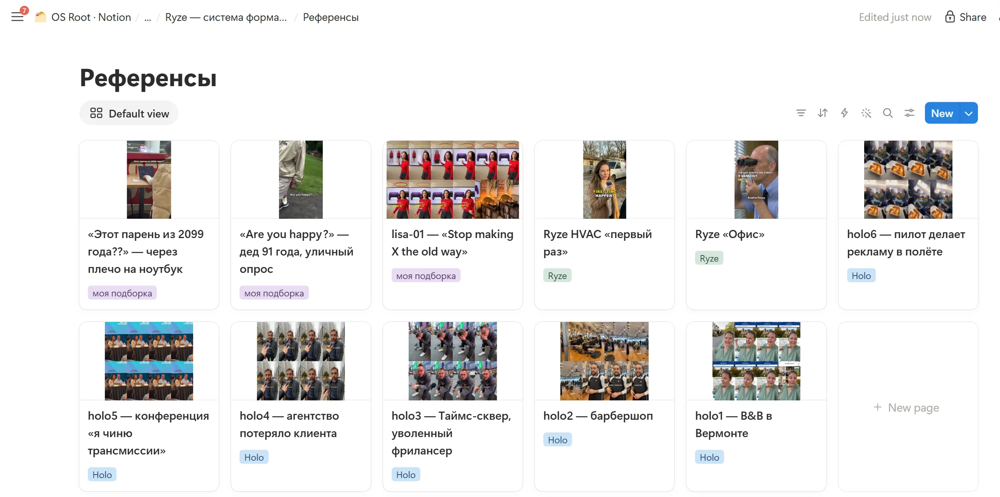
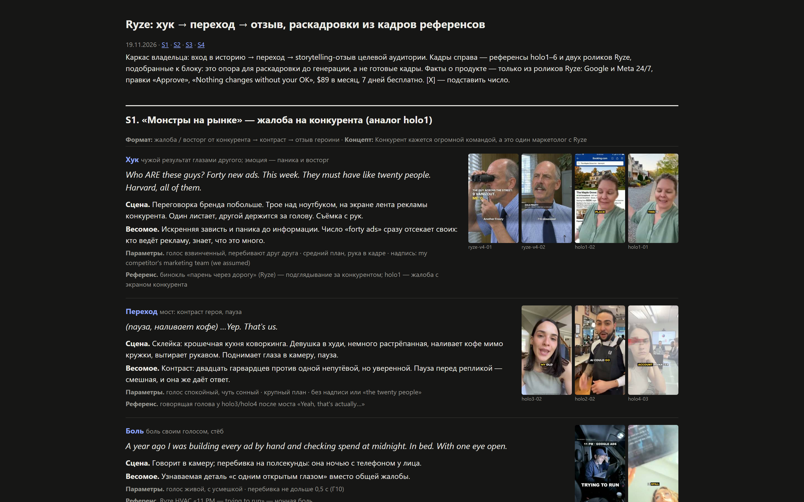
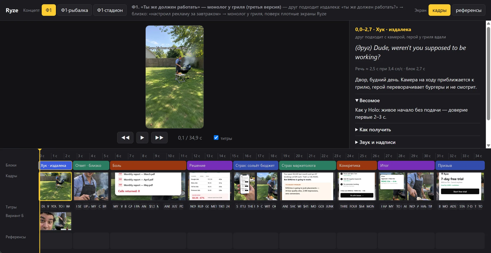

Ryze Production
Концепт → формат → сотня роликов
Когда роликов сотня, видно, какой хук и какой блок держат досмотр, и удачное переносится в следующие сценарии. Ниже сначала ролики по заданию, потом — как это устроено у меня в Notion, по шагам от формата до команды.
- 14форматов: 9 из разобранных роликов, 5 под мои концепты
- 74блока из роликов Holo, Ryze, lisaworldverse и моих концептов: хук, боль, демо, отзыв, призыв
- 29фраз: дословно от владельцев бизнеса и маркетологов
Типичная структура сценария
- Хук с промисомС эмоциями
- Боль
- Пруф
- Страх
- Отработка возражений
- Результат
- Срочность
- Призыв к действию
RYZE_/_01
Ролики
Один формат целиком, остальное по убыванию проработки.
Изучил ролики Holo, в том числе победные в библиотеке рекламы Meta, и сделал варианты по их примеру.
Чего здесь нет. Большинство роликов Holo, которые я разобрал, — живые кадры с интерфейсом поверх. Экраны и цифры Ryze кладутся на монтаже, поэтому подробно интерфейс показан в одном формате. В остальных концептах он подразумевается.







Выводы
1. Главное — хук, дальше блоки. После хука идёт обычная блоковая структура: промис, боль, пруф, страх, отработка возражений, результат, срочность, призыв к действию. Из блоков собираются концепты и форматы. Когда роликов много, по блокам копится статистика, и блоки можно ранжировать по тому, как они работают.
2. В разобранных роликах держат эмоция, звук и картинка вместе. У Holo живой голос звучит с первой секунды, хук длится 3–5 секунд, у человека в кадре живая жестикуляция и мимика. Такая эмоция даёт доверие или интерес.
3. Ходовой приём — хук и отзыв клиента историей. После хука клиент рассказывает свою историю: боли, страхи, как они закрылись, пруфы. Второй вариант — быстрый промис в первые секунды.
Про аналоги. Делать аналоги успешных роликов считаю нормальным, в рамках приемлемого копировать сработавшее не зазорно. Но я ими не ограничиваюсь: на аналогах развиваются приёмы, и потом сработавшие можно комбинировать между собой.
Живые ролики. Их важно пробовать. Чтобы сохранить эмоцию живого ролика, есть три способа:
- переснять по той же схеме;
- снять живьём и потом заменить людей поверх, главное — сохранить эмоции;
- на каналах, где это допустимо, перегенерировать живой ролик.
Чужой ролик идёт в рекламу только с лицензией автора и согласием человека в кадре.
Как из этого получается сотня роликов и где копится статистика по блокам — ниже, в разделах от «Формата» до «Скиллов».
RYZE_/_02
Формат

Формат — подача и точка зрения: тип съёмки и основная завязка. Уличное интервью с микрофоном, разговор двух знакомых, селфи, мокьюментари или их сочетание. Формат задаётся сразу, из него выходит первый концепт. В концепте «Ты же должен работать» герой отдыхает в рабочее время, друг спрашивает, почему он не на работе, и герой отвечает, что рекламу ведёт Ryze. В следующих эпизодах съёмка с одного места, вопрос друга и ответ героя остаются, меняются место и занятие: гриль, рыбалка, стадион.
База «Форматы»: 14 форматов, 9 из разобранных роликов и 5 под мои концепты. Подача одной фразой, тип съёмки, ролик-источник, концепты по формату.Концепт — конкретный ролик: сценарий, референсы, кадры, материалы. По сути это ТЗ исполнителю. Переход, боль, демо продукта, отзыв и призыв меняются от концепта к концепту и от формата зависят слабо.
База «Блоки» целиком: 74 блока по типам — хук, переход, боль, демо продукта, снятие возражения, обещание, отзыв, призыв. У каждого механика, канал и ролик-источник.
- Форматтип съёмки, точка зрения, завязка
- Концептсценарий, референсы, кадры
- Блокихук, боль, демо, отзыв, призыв
- Материалсмонтированный ролик
- Релизвыход в Instagram, YouTube, TikTok
- KPI-фактыпросмотры, удержание 3 с, досмотр, клики
- KPI-карточкисводка по релизам
- ← Блоккакой хук держит первые секунды
- ← Концепткакой ролик снимать вариантами
- ← Форматраскатывать, доработать или закрыть

Когда роликов сотня, у каждого блока копится статистика. График удержания показывает, на каком блоке зрители уходят, а хук проверяется двумя версиями одного ролика с разным началом. Блок, который выиграл такое сравнение, переходит в новые сценарии. Связи между базами уже есть, цифры ниже пока демонстрационные.
Метрики концептов: удержание 3 с, досмотр, CTR и конверсия, рядом формат концепта. Цифры демонстрационные.RYZE_/_03
Разбор референсов

Ролик-референс раскладываю по функциям фраз: хук, переход, боль, демо, отзыв, призыв. Блок уходит в базу с репликой, приёмом и тем, чем он держит. Шесть роликов Holo, два ролика Ryze и ролик lisaworldverse из задания дали 60 блоков, мои концепты — ещё 14.
База «Референсы»: 11 разобранных роликов: девять из задания (шесть Holo, два Ryze, lisaworldverse) и два из моей подборки.
Из повторов складываются устоявшиеся приёмы. Все хуки в разобранных роликах бьют в эмоцию. История идёт через личный опыт героя, как отзыв. Что хук должен вызывать эмоцию или доверие, пока гипотеза, её проверят следующие ролики. Завязки хуков растут из голоса аудитории: 29 фраз о боли, страхе перед ИИ и о том, с чего человек начинает искать сервис. Фразы разложены по трём образам покупателя, один из них — специалист по рекламе.
Образы аудитории: три образа, в каждом — фразы покупателей дословно. Открыт «Специалист по рекламе», 8 фраз.RYZE_/_04
Монтажный стол
Сценарий собирается на таймлайне: блоки по секундам, у каждого плана кадр начала и кадр конца, отдельные дорожки для референсов и для варианта Б. Длина реплик рассчитана по темпу речи в референсах: в среднем 3,4 слова в секунду.

RYZE_/_05
Скиллы и команда
Скилл — инструкция для модели, которая связывает базу знаний с конкретной задачей. Когда модель собирает следующий сценарий, скилл подаёт ей блоки и приёмы из базы. Когда появятся живые метрики, первыми пойдут блоки с лучшими цифрами.
Скиллы команды ведутся через GitHub. Монтажёры, дизайнеры и AI-креаторы правят свои скиллы и собирают эталоны, каждая правка идёт отдельным изменением с причиной, её видит вся команда и можно откатить. Раз в неделю я или руководители читаем правки и решаем, какая правка становится стандартом. Приём проходит три уровня: рабочее, устоялось, правило.
Постановку задач и приёмку ведут те же скиллы, к ним можно подключить аналитику. В RAWMID после стандартов на типовую задачу приходилось 0,7 правки вместо 2,4 — кейс «Стандарты».
- Сбор референсов
ref-collect - Разбор ролика по блокам
video-ref - Концепт от голоса аудитории
concept-pipeline - Кадры планов
image-prompt - Приёмы исполнения
craft-techniques - Монтаж
video-edit - Проверка гипотезы
hypothesis-test - Вывод → правило для всех
knowledge-scale
RYZE_/_06
Обо мне
Креативный директор. Строю систему, на которой команда выпускает много роликов и видит, что из них работает.
- AI pipelineКейс: от данных к кадрам и метрикам. На нём собраны Dyson и Airbnb.
- Честно об опытеС ИИ работаю четыре года, последние два с лишним — каждый день. Нейросетевых роликов сделал немного. В этом задании пройдены шаги до монтажного стола, генерацию видео и липсинк не делал.
- Продакшен с командойRAWMID: команда 10+ человек, гайд по съёмке, видео и Reels.
- Разбор референсовПостоянно разбираю чужие подачи. Базу блоков выше собрал так же.
- Знания остаются в компанииПравило, найденное на одном ролике, записано в базу и скилл. Его повторяет любой в команде, и оно не уходит вместе с человеком.
- ПортфолиоВсе кейсы на этом сайте. Сайт тоже сделал сам.